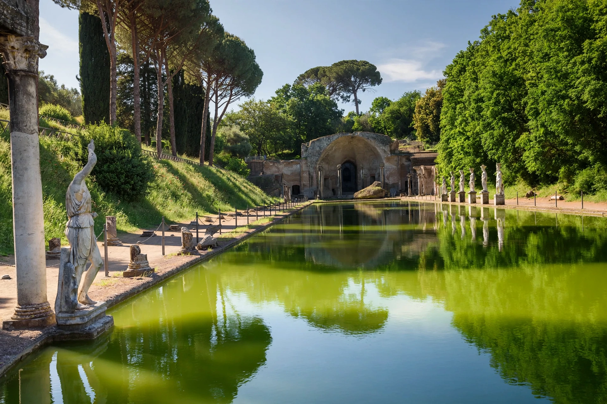

| Hadrian's Villa (Villa Adriana) | |
|---|---|
| Location | Tivoli, Lazio, Italy |
| Built | c. 118–138 AD |
| Builder | Emperor Hadrian |
| Area | Over 120 hectares (c. 300 acres) |
| Status | UNESCO World Heritage Site (1999) |

Hadrian's Villa (Italian: Villa Adriana) is a vast Roman archaeological complex at Tivoli, Italy, built as a retreat from Rome for the emperor Hadrian from about AD 118 onward. With more than thirty major buildings spread over at least 120 hectares of gardens, pools, baths, temples, and palatial apartments — much of it still unexcavated — it is the largest villa known from Roman antiquity, effectively a small city and the seat of imperial government in Hadrian's later years.
Ancient sources say Hadrian named parts of the villa after famous places he had visited on his travels through the empire: the Lyceum, the Academy, the Prytaneum, the Poecile, Tempe, and the Canopus of Egypt. The best-known features include:
The architecture of the villa, much of it presumably designed under Hadrian's own direction, is celebrated for its experimental domes and curvilinear plans — ribbed "pumpkin" domes and mixed convex-concave spaces that break with classical rectilinear design and anticipate later Roman and even Baroque architecture.
After Hadrian's death in 138, the villa was used by his successors but gradually declined. During the wars of late antiquity it was plundered; in the Renaissance it was rediscovered, and Pirro Ligorio's excavations for Cardinal Ippolito d'Este in the 1550s–60s removed statues and marbles to decorate the nearby Villa d'Este. Systematic excavation began in the nineteenth century after the Italian state acquired the site in 1870. Generations of finds — including celebrated statues of Antinous, the Furietti Centaurs, and the mosaic of doves now in the Capitoline Museums — came from its grounds. The villa was inscribed on the UNESCO World Heritage List in 1999.